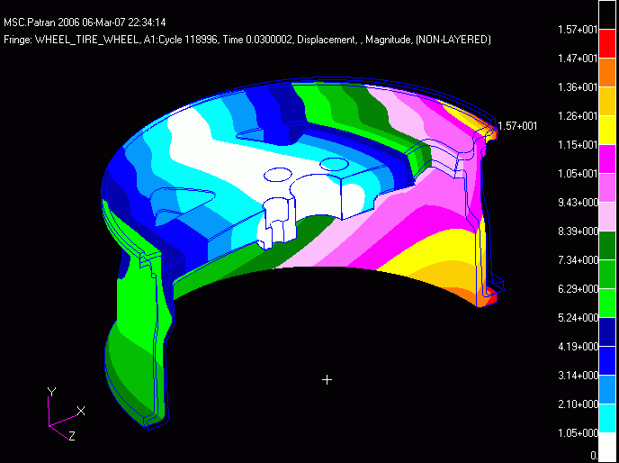
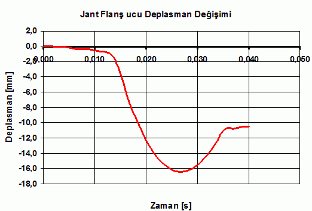
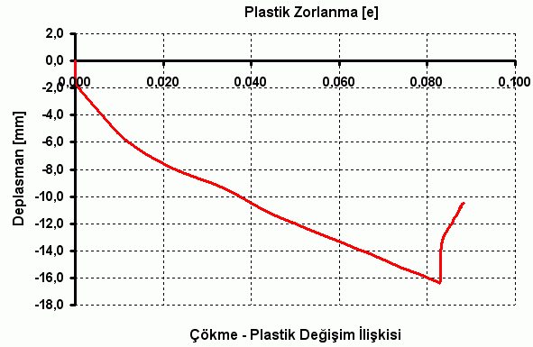
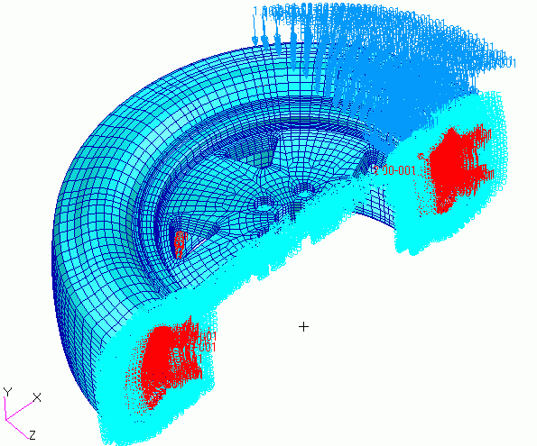
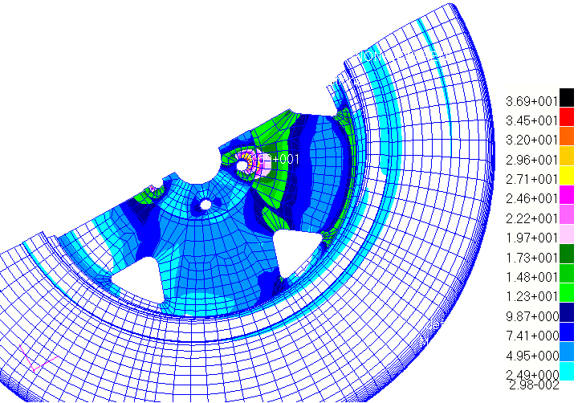
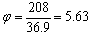
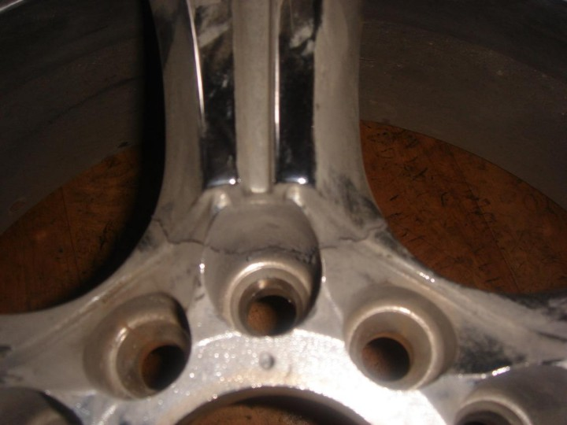

|

Þekil 11. Jant Üzerindeki Çökme Deðiþimi
Jant kesitinin en ucundaki çökme deðiþimi ise aþaðýdaki grafiklerde gösterilmiþtir.

Þekil 12. Çökmenin Zamanla Deðiþimi
Çökme deðiþimi incelendiðinde ise 10ms'ye kadar çökmenin çok az bir deðiþim ile arttýðý gözlemlenebilir. 14ms sonra ise baþlangýca göre ani bir artým göstermiþ ve daha sonra vurucunun yukarý yönde hareket etmesi ile çökme deðeri azalmaya baþlamýþtýr. Dinamik darbe testlerinde elde edilen maksimum çökme deðiþinin temas sonuna kadar devam ettiði gözlemlenmiþtir.

Þekil 13. Çökme - Plastik Zorlanma Ýliþkisi
Çökmeye baðlý olarak kritik bölgedeki zorlanma deðiþimi ise yukarýdaki grafikte görülmektedir. Özellikle çökme deðerinin belirli bir bölümüne kadar plastik deðiþim olmamýþ daha sonra çökme deðeri artmaya baþladýkça plastik deðiþim baþlamýþtýr. Plastik deðiþimin oluþmaya baþlamadýðý bu kritik zaman dilimi ise 0-13ms aralýðýdýr. Daha sonraki çökme deðerleri için bijon bölgesinde plastik deðiþim oluþmaya baþlamýþ ve çökmeye baðlý olarak doðrusal bir artýþ gösterme eðiliminde olmuþtur. Jant ucundaki ters yöndeki hareketin baþlangýcýnda ise plastik zorlanma miktarý biraz daha artmýþtýr.
Dinamik analiz sonuçlarý yapýldýktan sonra bu sistem için dinamik çarpan katsayýsý araþtýrýlmýþtýr. Dinamik çarpan katsayýsý için serbest düþme de kazanýlan enerjiden kuvvete geçilmiþ ve kuvvet temas yüzeyine yayýlý olarak aþaðýdaki þekildeki gibi verilmiþtir.

Þekil 14. Statik Analiz Koþullarý
Analiz sonrasýnda elde edilen gerilme deðerleri aþaðýda gösterilmiþtir. Statik analiz sonuçlarý incelendiðinde maksimum gerilme bölgesi bijon bölgesinde olduðu görülmüþtür. Özellikle dinamik analiz kritik bölgeleri ile statik analiz sonuçlarýndaki kritik bölgeler tam bit uyum içerisindedir. Ancak statik analiz sonucu göstermiþtir ki sistem üzerindeki dinamik yüklerden oluþacak gerçek gerilmeler her zaman statik yüklerden daha büyük olacaktýr. Statik analizden elde edilen maksimum gerilme deðeri için dinamik gerilme deðerleri kýyaslanmýþtýr.

Þekil 15. Statik Analiz Sonuçlarý
Buna göre dinamik ve statik analiz sonuçlarý kýyaslanmýþ ve statik çarpan deðeri maksimum gerilme için  olarak elde edilmiþtir. Sonuç olarak elde edilen gerilme deðiþimleri ve plastik bölgelerin kýyasý bakýmýndan daha önce yapýlmýþ gerçek jant darbe test numuneleri incelenmiþ ve çatlak bölgeleri belirlenmiþtir. Aþaðýda bunun bir örneði yer almaktadýr.

Þekil 16. Darbe Testi Numunesi
Numune dikkatli bir þekilde incelendiðinde özellikle bijon bölgesinde çatlak oluþumunun olduðu görülmüþtür.
7. Sonuç ve Öneriler
Bu çalýþma sonrasýnda elde edilen sonuçlar, darbe gibi dinamik kuvvetlerin etkisi altýnda kalan mühendislik problemlerinin hesaplama metotlarýna bir bakýþ açýsý getirmiþtir.
A360 alüminyum alaþýmlý jant modeli için yapýlan darbe simülasyonu sonrasýnda akma sýnýrýnýn geçildiði görülmüþtür. Dolayýsý ile plastik zorlanma etkileri tartýþýlmýþtýr. Darbe testi analizleri sonrasýnda maksimum gerilmenin ve 26ms sonra oluþtuðu gözlemlenmiþtir. Ayrýca jant flanþýna ait maksimum deplasman miktarýnýn 16,42mm olduðu görülmüþtür. Jant darbe testinde flanþtaki çökme miktarýnýn 8 ile 10 mm den sonra jant üzerinde çatlak oluþtuðu gözlemlenmiþtir.
Dinamik analiz sonucunda elde edilen maksimum gerilme deðerinin 208MPa olduðu görülmüþtür. Bu gerilme deðeri jant malzemesinin akma gerilmesinin üstündedir. Bu çalýþmada deðinilen dinamik kuvvetler ile statik kuvvetler arasýndaki iliþkiye ait teorileri desteklemek bakýmýndan statik analizler yapýlmýþtýr. Statik analiz sonucunda elde edilen maksimum gerilme deðeri ile dinamik gerilme bölgelerinin birbirine çok yakýn olduðu görülmüþtür. Statik analiz sonrasýnda elde edilen maksimum gerilme deðeri 36,9 MPa dýr. Modelin dinamik çarpan katsayýsý farklý zaman dilimlerinde elde edilmiþtir. 10ms sonra dinamik çarpan 2 iken maksimum dinamik gerilme zamanýnda dinamik çarpan 5,63 mertebelerine ulaþmýþtýr. Dinamik analizlerin yapýlamadýðý noktalarda alüminyum alaþýmlý jantlar için bu katsayýlar kullanýlabilir.
Bu bilgiler ýþýðýnda dinamik yüke maruz sistemlerde dinamik kuvvetlerin doðuracaðý etkinin statik kuvvetlerden oldukça yüksek olduðu görülmüþtür. Tasarým süresince bu bilgiler dikkate alýnmalýdýr. Jant üretiminde kullanýlan malzemenin akma özellikleri 208 MPa' dan daha yüksek tutulmalýdýr. Tasarýmýn sonunda elde edilen ürünler darbe testi ekipmanýna da ihtiyaç duymadan bu çalýþmada anlatýlan yöntemler ile bilgisayar ortamýnda benzetimi ve mühendislik analizleri yapýlarak darbe testi sonuçlarý elde edilebilir ve gerektiði takdirde tasarým deðiþikliðine gidilebilir.
Bu çalýþmanýn ardýndan jantlar üzerine diðer çalýþmalar yapýlabilir. Bu analiz sonrasýnda darbe etkisinin gözlemlenebilinmesi ve ölçülmesi için zamanýn çok küçük birimlerinde çalýþan yüksek hýzlý kameralý sistemler ile yapýnýn davranýþý gözlemlenebilir ve straingageler vasýtasý ile de gerilme miktarlarý ölçülebilir. Bu çalýþma da deðinilmeyen jantlarýn yorulma etkileri üzerinde durulabilir. Yorulma etkileri çalýþmalarý deneysel sonuçlar ile desteklenmeli ve ürünün tasarýmýna katkýda bulunmalýdýr.
Kaynaklar
[1] |
JOHN C. STEARNS, An Investigation Of Stress And Displacement Distribution In A Aluminum Alloy Automobile Rim. In Partial Fulfillment
of the Requirements for the Degree Doctor of Philosoph, The Graduate Faculty of The University of Akron, May 2000; pp. 1-43. |
[2] |
ROBERT S., NAIYI LI, WILLIAM AL., HENRY HU, Dynamic Side Impact Simulation Of Aluminum Wheels Incorporating Material Property Variations. InAluminum 2004 Edited by Subodh K. Das TMS (The Minerals, Metals & Materials Society), U.S.A. 2004. |
[3] |
GORDON XU, Aluminium Wheel Design to Meet Impact Requirement, 2000 iSIGHT Conference, Optimal CAE Inc., pp.1-13. |
[4] |
K.S. TAN, S.V. WONG, R.S. RADÝN UMAR, A.M.S. HAMOUDA, N.K. GUPTA, An Experimental Study of Deformation Behaviour of Motorcycle Front Wheel- Tyre Assembly Under Frontal Impact Loading, International Journal of Impact Engineering, Received 20 January 2005. |
[5] |
MSC.Dytran® Theory Manual Version 2005. |
[6] |
LS-DYNA® User's Guide. |
[7] |
J. STEARNS, T.S. SRIVATSAN, A. PRAKASH, P.C. LAMModeling the Mechanical Response of an Aluminum Alloy Automotive Rim, Materials Science and Engineering A366 (2004) 262-268 , Department of Mechanical Engineering, The University of Akron, Akron, OH 44325-3903, U.S.A |
[8] |
BEER, F., P. Ve JOHNSTON, E., R., Jr., Mechanics of Materials, Second
Edition in SI unit, Mc. Graw Hill Book Company. |
[9] |
SAYMAN,O. Ve KARAKUZU R. Mukavemet II, D.E.Ü Makine
Mühendisliði Bölümü, 1994. |
[10] |
CERÝT MUHAMMET, Mukavemet Ders Notlarý, S.A.Ü Makine
Mühendisliði Bölümü, SAKARYA, 2003. |
[11] |
LS-DYNA® Theoritical Manual May 1998. LSTC |
[12] |
TAWFÝK K., HALÝL, PAUL DU BOIS, Finite Element Analytical Techniques and Applications to Structural Design, Vehicle Crashworthiness and Occupant Protection, pp. 111-158. |
[13] |
GEORGE E. MASE, G. THOMAS MASE, Continuum Mechanics for Engineers, Second Edition, 1999 by CRC Press LLC. |
[14] |
GEORGE Z. VOYIADJIS, PETER I. KATTAN, Damage Mechanics, 2005 by Taylor & Francis Group, LLC |
[15] |
KEVIN MENARD, Dynamic Mechanical Analysis: A Practical Introduction, 1999 CRC Press LLC |
[16] |
MATTHEW HUANG, Vehicle Crash Mechanics, CRC PRESS Boca Raton London New York Washington, D.C. |
[17] |
Nas 101 Seminar Notes, Basic MSC.Nastran Linear Static and Normal Modes Analysis, November 2000 U.S.A. M.S.C Corp. |
|